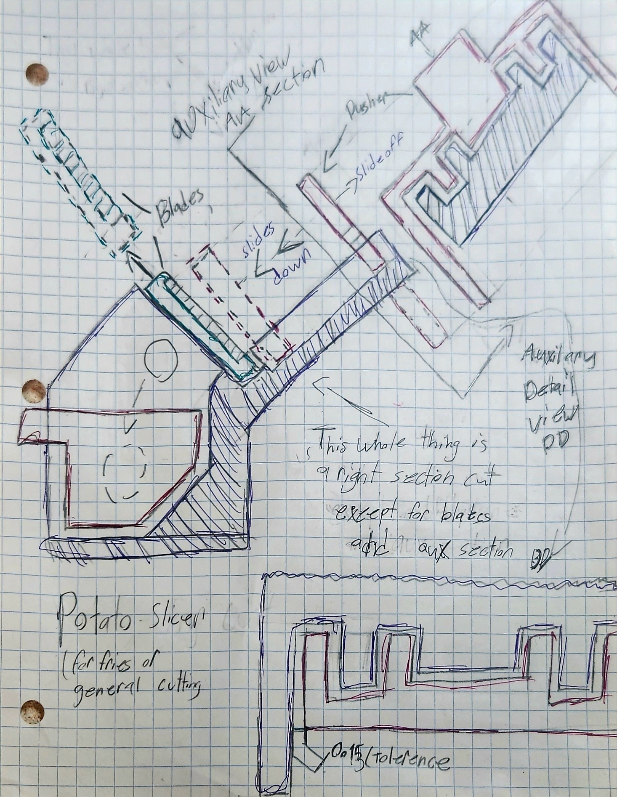
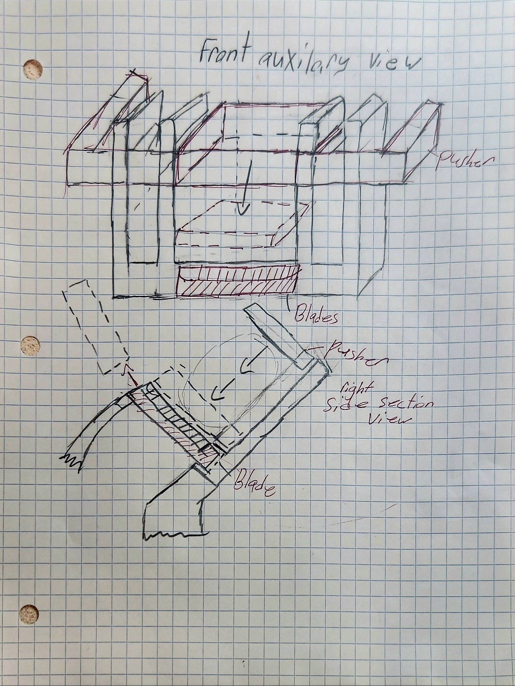
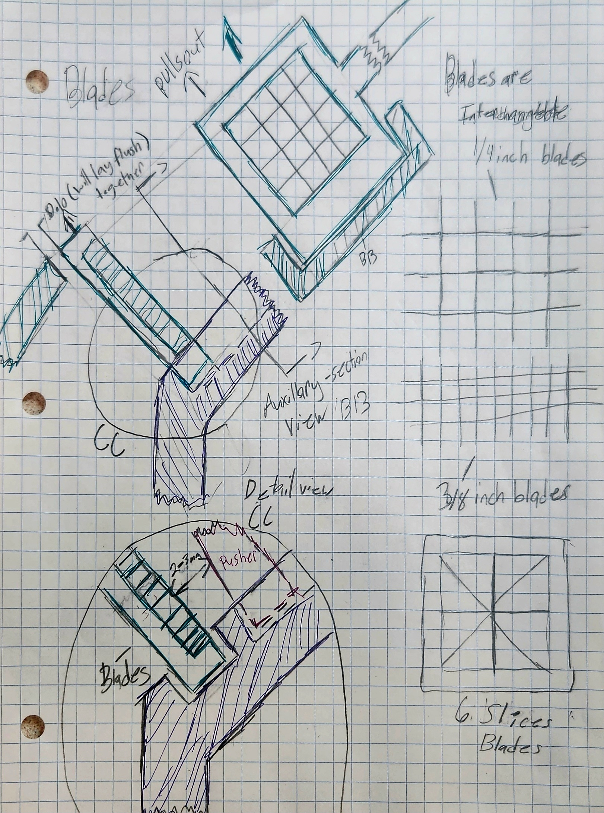

Course Project (EML2023)
Potato Slicer CAD Design
Hand-Powered French Fry Slicer — EML2023 Final Project

Final project for EML2023 (Computer Aided Graphics and Design) at the University of Florida, taught by Dr. Ashok V. Kumar — the course where I was formally taught SolidWorks and the fundamentals of solid modeling, assembly design, and GD&T, though I was already fairly comfortable with CAD going in. The assignment was open-ended: independently design any slicing mechanism and fully model it. I designed a hand-powered potato slicer built to cut French fries quickly in a home kitchen, submitted November 28, 2023.
Hand sketches developed before modeling — mechanism layout, blade grid, and basket geometry.



My first idea was a guillotine — a blade slamming down to actively cut the potato. It was simple and fully hand-powered, but I couldn't find a clean way to deposit the slices into a container, so I abandoned it before it ever got sketched. I revised it into a reverse guillotine: instead of the blade moving, a pusher plate pushes the potato down onto stationary blades, cutting passively. The plate rides in slots — I started with square slots, then switched to a dovetail profile for better guidance — and the whole cutting mechanism sits at a 35° angle to the top plane so gravity naturally holds the potato in place and keeps it from falling out or misaligning.
I later added return springs, housed in the same slots the pusher plate runs in, so the plate snaps back to the top on its own after each cut — pushing is easier than pulling, so I let the spring do the harder job. For the blades, I wanted them removable and dishwasher-safe, so they sit in a rectangular slot that lines them up flush with the back face of the slicer in a roughly 1/4-inch square grid pattern, held in place by gravity and friction, with a handle on one end (with a hole for wall storage) for easy insertion and removal. The basket shared the same requirements: removable, dishwasher-safe, and sized to hold a useful amount of fries. I settled on a drawer that slides into a slot on the main body, with a handle that has a semi-circle undercut to make it easy to pull out and empty.
Assembly: the main body is the base of the whole slicer and, because of its complex angled geometry, is designed to be 3D-printed rather than injection molded. The springs are off-the-shelf, paired with injection-molded spring covers that press-fit into slots on either side of the main body (with adhesive at the base to keep them from working loose over time) to form the return-spring subassembly. From there, the blade and basket components simply slide into their dedicated slots with free-running clearance — no tools required, and both can be pulled back out just as easily for cleaning.
Operation: with the blade and basket fully seated, a potato is placed in the angled slot at the center of the main body, where gravity holds it in position. The user aligns the pusher plate with the top slots and spring covers and applies steady downward force — the springs compress as the plate travels down the dovetail slots and guide it back up once the cut is complete. Fry slices drop straight into the basket below, and the process repeats until the basket is full.
Complete write-up submitted for EML2023 — objective, concept selection, assembly, operation, and material justification.